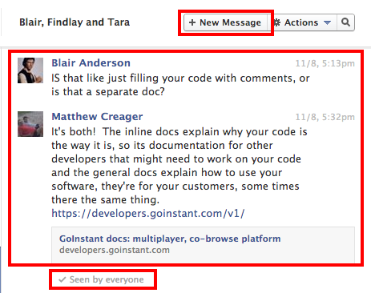

Real-time, Multi-User Made Easy with
AngularJS and Visualforce
Safe Harbor
Safe harbor statement under the Private Securities Litigation Reform Act of 1995:
This presentation may contain forward-looking statements that involve risks, uncertainties, and assumptions. If any such uncertainties materialize or if any of the assumptions proves incorrect, the results of salesforce.com, inc. could differ materially from the results expressed or implied by the forward-looking statements we make. All statements other than statements of historical fact could be deemed forward-looking, including any projections of product or service availability, subscriber growth, earnings, revenues, or other financial items and any statements regarding strategies or plans of management for future operations, statements of belief, any statements concerning new, planned, or upgraded services or technology developments and customer contracts or use of our services.
The risks and uncertainties referred to above include – but are not limited to – risks associated with developing and delivering new functionality for our service, new products and services, our new business model, our past operating losses, possible fluctuations in our operating results and rate of growth, interruptions or delays in our Web hosting, breach of our security measures, the outcome of any litigation, risks associated with completed and any possible mergers and acquisitions, the immature market in which we operate, our relatively limited operating history, our ability to expand, retain, and motivate our employees and manage our growth, new releases of our service and successful customer deployment, our limited history reselling non-salesforce.com products, and utilization and selling to larger enterprise customers. Further information on potential factors that could affect the financial results of salesforce.com, inc. is included in our annual report on Form 10-K for the most recent fiscal year and in our quarterly report on Form 10-Q for the most recent fiscal quarter. These documents and others containing important disclosures are available on the SEC Filings section of the Investor Information section of our Web site.
Any unreleased services or features referenced in this or other presentations, press releases or public statements are not currently available and may not be delivered on time or at all. Customers who purchase our services should make the purchase decisions based upon features that are currently available. Salesforce.com, inc. assumes no obligation and does not intend to update these forward-looking statements.
Matthew Creager
Developer Evangelist
@matt_creager
What we'll discuss today...
1. What is a Real-Time, Multi-User App
2. Why Does it Matter?
3. How Can You Build One?
CHAPTER ONE
What is a Real-Time, Multi-User App
A web application
your users can share
Intuitive & Immersive

Subtle, but Functional
CHAPTER TWO
Why Does it Matter?
Let's Start with a Story
Most web applications connect
people to servers
While what people really want is to
connect with people
The experiences we remember
are the the ones we've shared
CHAPTER THREE
How Can You Build One?
Easy, Use GoInstant ;)
GoInstant: A platform for building collaborative, real-time, multi-user app's
Access Control
- Users & Groups
- Authorization
- Secure Data Transmission
- SSO Support
- Authentication
- Permissioning
- Standards Based Encryption
Data Synchronization
Messaging
Scale
multi-user by design
User Lifecycle
Create and manage users and their data
Rooms & Channels
Organize users and let them communicate
Presence
User arrivals, departures and location
Real-time, multi-user fundamentals
- Multi User
- Synchronized Data
- Real-time Messaging
- Auto Scaling
- Access Control
- End-to-End Security
Getting started could not be
Easier
Sign-Up

Create an App

Retrieve Your Connect URL

Add the Script Tag
Connect
var url = 'https://goinstant.net/mattcreager/DreamForce';
goinstant.connect(url, function (err, connection, lobby) {
if (err) {
// Could not connect to GoInstant
throw err;
}
// You are now connected!
});
Proceed to Craft
Extraordinary Experiences
Or just do what everyone else does
Make a Todo App
Live Coding
So simple, now what?
Let’s refactor
CHAPTER FOUR
Refactor & Deploy
Before we refactor we need
The Perfect Tool
Client-Side MV* Framework
Developed in 2009 by Miško Hevery & Adam Abrons
Almost all the Angular things:
- Templating
- Dependency Injection
- Routing
- Event Dispatching
- Production Ready
Data-Binding gets its very own slide
it's just that cool
When these powers combine
The Old Todo App
Now GoAngularized
Real Apps need to Live Somewhere
Visualforce intergration is in-bound
and since you're here anyway
LET'S EXPERIMENT
http://bit.ly/18991hR
GoAngular & Examples on GitHub
github.com/goinstant/goangulargithub.com/mattcreager/goangular-todo-examplegithub.com/mattcreager/todo-example